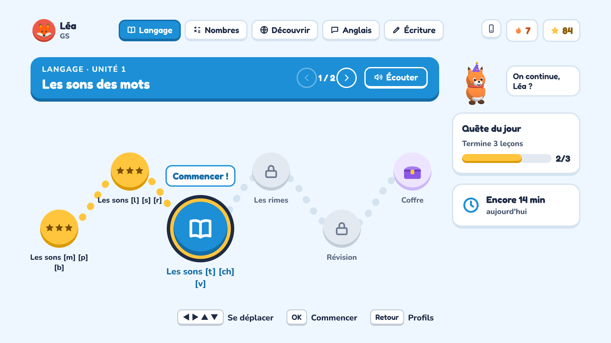
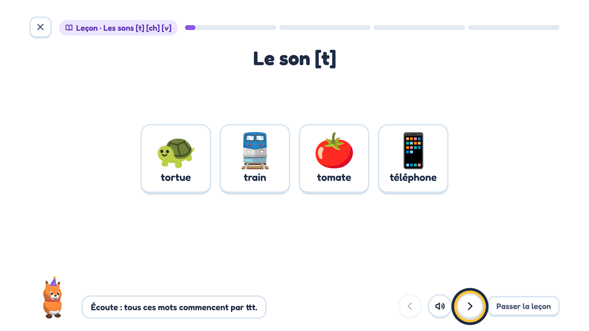
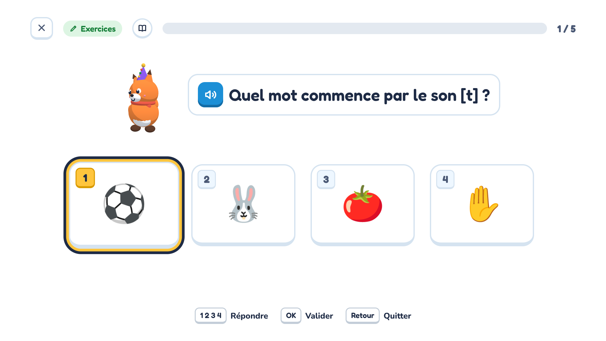
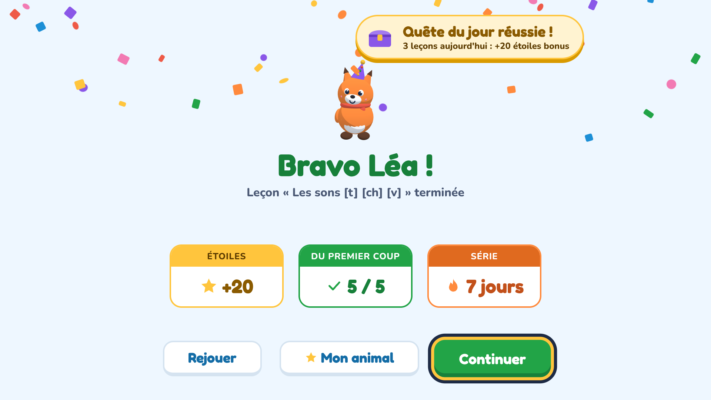
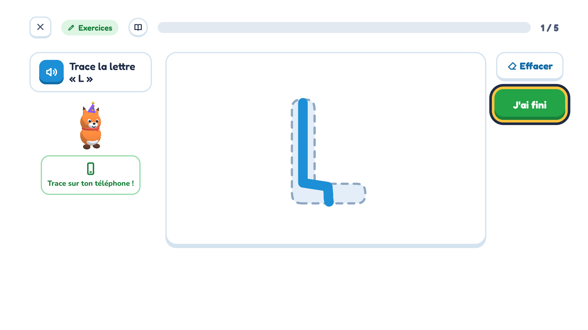
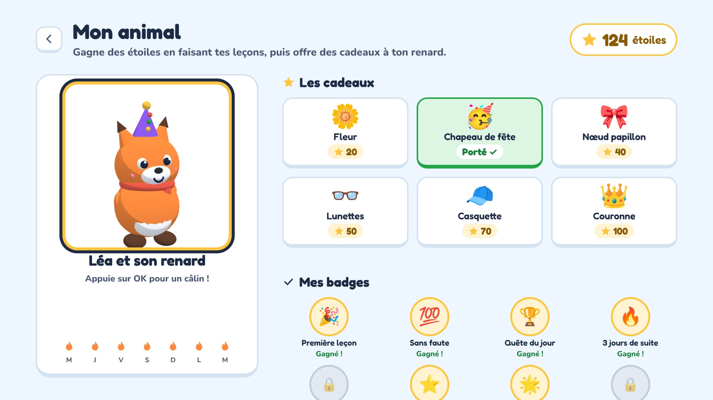

School at home, on the TV
Lessons, then exercises, following the French national curriculum from the first year of nursery school (TPS) to CE2. Everything is read aloud, so children who cannot read yet play on their own. The app is in French, and teaches English as a foreign language.
- Ages 2 to 9
- 151 lessons
- No ads
- No data collected

A real lesson first, then the exercises
Every lesson starts with a few pictures, explained and read aloud. Then come 5 exercises, with numbered answers the remote picks with one key. A mistake? "Presque !" ("Almost!"), and they try again, with no penalty.

The lesson, in pictures and read aloud 
Exercises with answers numbered 1 to 4 
Stars, badges and confetti for the daily quest
5 subjects, 151 lessons
The lessons follow each child's class.
Language and French
Colours, letters, sounds and rhymes, syllables, reading words, then grammar and comprehension.
Numbers and maths
Counting, comparing, adding, taking away, number bonds, times tables, telling the time, word problems.
Discovering the world
Animals, the five senses, day and night, weather, seasons, days and months, water, fruit and vegetables.
English
First words, spoken by an English voice, with the French meaning underneath.
Handwriting
Tracing lines, letters, numbers and their own first name, with a finger on the phone.
The phone as a slate
Scan the QR code shown on the TV and the phone becomes a controller: the child answers on it and traces letters with a finger, live on the TV.
- Put the phone on the same Wi-Fi as the TV
- Scan the QR code with the camera
- Tap your first name, and play
Nothing to install on the phone, nothing goes through the internet. Available with the Android TV app and in other TVs' web browser.


A 3D companion
The animal the child picks (fox, bear, rabbit, panda, unicorn…) jumps for joy at every right answer, dances after three in a row and falls asleep when it is time for a break. The stars they earn buy gifts for it to wear.
For parents
A space protected by a 4-digit PIN chosen on first launch.
One profile per child
First name, class and animal: the lessons follow the class.
Screen time
A daily limit per child, with a gentle break screen. 15 more minutes with the PIN.
Progress
Time spent over 7 days, lessons finished and results per subject.
Privacy
No account, no ads, no analytics: everything stays on the TV. Privacy policy
Which TV?
The app is played with the remote. TVs from 2022 or newer are recommended.
| The TV runs | Brands (examples) | How |
|---|---|---|
| Android TV, Google TV | Sony, TCL, Philips, Hisense, Xiaomi, Chromecast with Google TV | The Android TV app, coming to Google Play |
| Fire TV | Amazon Fire TV Stick, Toshiba and Grundig Fire TV | The Android TV app, installed by hand |
| LG webOS | LG | The LG app, in developer mode |
| Samsung Tizen | Samsung | The Samsung app, in developer mode |
| Any other TV with a web browser | Hisense VIDAA, Philips Titan OS, Panasonic… | The TV's web browser, from a computer at home |
Roku and Apple TV are not supported. Premium is bought in the Android TV app; on other TVs everything is open for now.
Help
How do I connect the phone?
- Put the phone on the same Wi-Fi as the TV.
- On the TV, choose « Téléphone » (top of the profiles, or in the parent space).
- Scan the QR code with the camera, or type the address shown.
The phone reconnects by itself next time.
How do I cancel the subscription?
In Google Play › Payments & subscriptions › Subscriptions › Petits Savants Premium, or in the app: Espace parents › Premium actif › Gérer l'abonnement. Premium stays open until the end of the period already paid.
New TV: how do I get Premium back?
Sign the new TV into the same Google account, then Espace parents › Découvrir Premium › « Restaurer mes achats ». Profiles and progress stay on the old TV: they are stored nowhere else.
I forgot the parent PIN
The PIN is only stored on the TV and cannot be recovered. To choose a new one, clear the app's data in the TV's settings (or reinstall it): profiles and progress are erased too. The subscription comes back with « Restaurer mes achats ».
How do I erase a child's data?
Espace parents › choose the child › « Recommencer à zéro » (progress) or « Supprimer le profil » (delete). Nothing is kept anywhere but on the TV.
Contact us
A question, an idea, a problem? [CONTACT EMAIL]